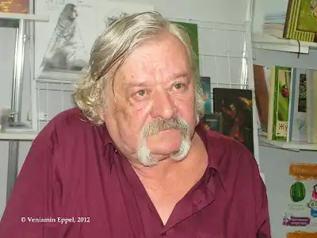

Михайло народився 5 червня 1947 року в прикарпатському селі Лісний Хлібичин, що в Коломийському районі Івано-Франківської області. Нелегкою булоа життєва доля малого Михайлика, поневіряння до 1963-го року навчався в Коломийській, а потім, до 65-го, – у Снятинській школах-інтернатах — загартували характер майбутнього письменника.
Молодого автора запримітили у Києві і запрошували на поетичні вечори, а згодом він уже навчався у Київському державному університеті ім. Т. Г. Шевченка. Навчаючись в університеті, він увійшов до складу Київської поетичної школи, яка склалася зі студентів філологічного та філософського факультетів. Але в 1969 році під тиском КДБ був змушений, як і інші провідні автори школи, залишити університет.
Пізніше Григоріву довелося переїхав до Латвійської РСР, там він і закінчив Латвійський державний університет 1975 року. Ще навчаючись в університеті він захопився латвійською літературою, пробував її перекладати. Після навчання почав працювати журналістом у різних комсомольських і профспілкових виданнях. Досконало вивчивши латвійську мову він переклав на українську відомих латиських поетів: Ейжена Веверіса, Іманта Зієдоніса, Ояра Вацієтіса, Петеріса Зірнітіса. В Латвії й сформувалася його активна суспільна позиція. Григорів наприкінці 1980-х років брав участь в роботі Народного фронту Латвії, був одним із засновників об'єднання українців Латвії. Повернення до України, в 1990 році, знаменувалося відродженням гурту київської школи поезії. Незалежність України надихнула його ще й до суспільних потуг, працював у різних українських літературних виданнях, з 2004 року Михайло головний редактор тижневика "Вісник Чорнобиля". Пізніше він перейшов на роботу в апараті Національної Спілки Письменників України. 3 січня 2016 року на 68 році життя, в Київській міській клінічній лікарні о 15:30 помер поет і перекладач Михайло Григорів. Похований на кладовищі в рідному селі Лісний Хлібичин. Автор поетичних збірок "Вези мене, конику", "Зелена квітка тиші", "Спорудження храму", "Сади Марії".